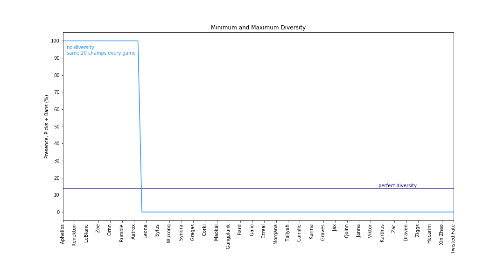

Diversity Score Calculation

Here, I will explain how I calculated the diversity scores. I got the idea and took a very similar approach to a calculation that I found on the web (diversity calculation), but I will try to explain it better here.
In order to get an idea on how to form a diversity scale, take a look at the following graph. Here we are simulating two scenarios: perfect diversity and no diversity. Perfect diversity would mean that each champion would be equally present throughout all games. Since there are 148 champions, 20 champions per game (remember bans are also included), each champion would need to be present in (20/148)x100 or 13.51% of all games. A no diversity situation would mean that the same 20 champions would be present in all games (100% presence) and the rest will have 0% presence. 
To create the diversity scale, we are going to calculate the area (A) between the diversity line and the perfect diversity line. Subtract 13.51 from each champion presence (P), take the
absolute value and sum all those values.
A = summation[abs(P-13.51)]
So for the no diversity situation, we would calculate abs(100-13.51)*20 + abs(0-13.51)*128 which gives us 3,459.08 or the maximum area. The perfect diversity would have an area of 0 (duh). Now we
have created the basis for our diversity scale, but we want it to be from 0-100, 0 being least diverse and 100 being most diverse. Basically we can take the calculated area (A) divide by the max area (min diversity),
3,459.08 and multiply by 100 to get it to a 100 scale. But we also need to invert the scale, so we will take that result and subtract it from 1:
1-A/3,459.08
There you have it!